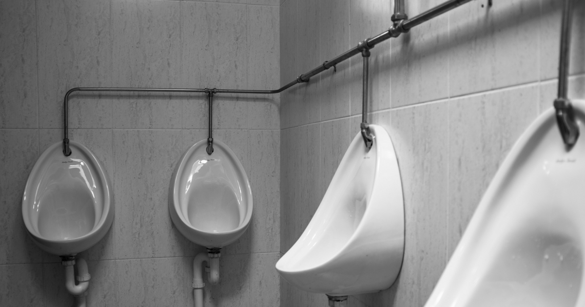

ရုတ်တရက် ဆီး လုံးဝမသွားတော့ရင် ဘယ်လိုကုသမလဲ

ရုတ်တရက် ဆီးက လုံးဝမသွားတော့တာဟာ ကျောက်ကပ်ရဲ့ လုပ်ငန်းဆောင်တာတွေ ရုတ်တရက် ပျက်စီးသွားလို့ပဲ ဖြစ်ပါတယ်။ ကျောက်ကပ်ရဲ့ လုပ်ငန်းဆောင်တာတွေ ပျက်စီးသွားတဲ့အခါ ဆီးသွားတာ တဖြည်းဖြည်း နည်းလာပြီး ရက်အနည်းငယ် ကြာလာတဲ့အခါ ဆီးလုံးဝမသွားတော့တာ ဖြစ်နိုင်ပါတယ်။
.
.
.
ရုတ်တရက် ဆီးက လုံးဝမသွားတော့တာဟာ ကျောက်ကပ်ရဲ့ လုပ်ငန်းဆောင်တာတွေ ရုတ်တရက် ပျက်စီးသွားလို့ပဲ ဖြစ်ပါတယ်။ ကျောက်ကပ်ရဲ့ လုပ်ငန်းဆောင်တာတွေ ပျက်စီးသွားတဲ့အခါ ဆီးသွားတာ တဖြည်းဖြည်း နည်းလာပြီး ရက်အနည်းငယ် ကြာလာတဲ့အခါ ဆီးလုံးဝမသွားတော့တာ ဖြစ်နိုင်ပါတယ်။
ဘာကြောင့် ဖြစ်ရတာလဲ
ဆီးလုံးဝမသွားတော့တာကို ဖြစ်စေနိုင်တဲ့ အကြောင်းအရင်းတွေကတော့-
သွေးအများကြီး ထွက်တာ၊
ဝမ်းအများကြီးသွားတာ၊
ဆီးချိုတွေ အများကြီး ဆောင့်တက်တာ၊
သွေးဆိပ်တက်တာ၊
ကျောက်ကပ် သွေးကြောလေးတွေကျဉ်းတာ၊
ကျောက်ကပ်ကို ထိခိုက်စေတဲ့ ဆေးတွေ သောက်နေတာ၊
အသည်းခြောက်ရောဂါ ဖြစ်နေတာ၊
နာတာရှည် နှလုံးရောဂါ ဖြစ်နေတာ၊
မြွေပေါက်ခံရတာ၊
ဆီးကျိတ်ကင်ဆာ ဖြစ်တာ၊
ဆီးလမ်းကြောင်းမှာ ကျောက်တည်တာ၊
ဆီးလမ်းကြောင်းကျဉ်းနေတာ စတာတွေပဲ ဖြစ်ပါတယ်။
ဘယ်လို ကုသမလဲ
ဆီးလုံးဝမသွားတော့ခြင်းကို ကုသရမယ့်နည်းတွေကတော့-
အရင်ဆုံး အရေးပေါ် အသက်ကယ်ခြင်းကို လုပ်ရပါမယ်။ အသက်ရှူလမ်းကြောင်း ပွင့်အောင် လုပ်တာ၊ အောက်ဆီဂျင်ပေးတာ၊ ECGဆွဲတာ၊ သွေးကြောထဲကို ဆေးသွင်းဖို့ အပ်ထိုးတာစတာတွေကို အရင်ဆုံး လုပ်ရပါ့မယ်။
ဒါတွေ ပြီးရင်တော့ ဆီးလုံးဝမသွားရခြင်းရဲ့ အကြောင်းအရင်းကို ရှာရပါမယ်။ ရောဂါရာဇဝင်ကို မေးမြန်းတာ၊ စမ်းသပ်စစ်ဆေးတာတွေ လုပ်ရပါမယ်။ ဒါ့အပြင် ကျောက်ကပ်ဆိပ် တက်၊ မတက်ကို သွေးဖောက်စစ်တာ၊ ဆီးစစ်တာ၊ ဆီးပိုးမွေးတာ စတာတွေကိုလည်း ပြုလုပ်ရပါမယ်။
ဒါ့အပြင် ဆီးလုံးဝမသွားခြင်းကို ကုသရာမှာ အရေးတကြီး ကုသရမယ့် အပိုင်းတွေ ရှိပါတယ်။ အရင်ဆုံး အနေနဲ့ ကျောက်ကပ်ရဲ့ လုပ်ငန်းဆောင်တာ ပျက်စီးတဲ့အတွက် ပိုတက်ဆီယမ်တွေကို ဆီးထဲက တစ်ဆင့်မစွန့်ထုတ်နိုင်တဲ့အတွက် သွေးထဲမှာ ပိုတက်ဆီယမ်တွေ များလာပါတယ်။ ပိုတက်ဆီယမ်တွေ အရမ်းများလာရင် နှလုံးခုန်မမှန်ဘဲ သေဆုံးတာထိ ဖြစ်နိုင်ပါတယ်။ ဒီအတွက် ၁၀ ရာခိုင်နှုန်း ကယ်လ်ဆီယမ်ဂလူကိုးနိတ်၊ အင်ဆူလင်နဲ့ ဂလူးကို့စ်၊ ဆိုဒီယမ်ဘိုင်ကာဗွန်နိတ် စတဲ့ဆေးတွေနဲ့ သတ်မှတ်ထားတဲ့ပမာဏ၊ သတ်မှတ်ထားတဲ့အချိန်အတိုင်း ကုသရပါမယ်။
ခန္ဓာကိုယ်အတွင်းက အရည်ပမာဏ ဆုံးရှုံးမှုများလို့ ဖြစ်တာဆိုရင်တော့ လိုအပ်တဲ့ အရည်ပမာဏကို ပြန်ဖြည့်ပေးရပါမယ်။ သွေးထွက်လွန်တာမျိုး ဆိုရင်တော့ သွေးကိုလိုသလောက် ပြန်သွင်းပေးရပါမယ်။
ဆီးလမ်းကြောင်းမှာ အကြောင်းတစ်ခုခုကြောင့် ပိတ်နေတာမျိုးဆိုရင်တော့ ခွဲစိတ်ကုသဖို့ လိုအပ်နိုင်ပါတယ်။ နောက်ဆက်တွဲ ကုသမှုအနေနဲ့ကတော့-
ဆုံးရှုံးသွားတဲ့ အရည်တွေကို ပြန်ဖြည့်ဖို့အတွက် အရင်နေ့က ဆုံးရှုံးတဲ့အရည်ပမာဏကို ၅၀၀ မီလီလီတာ ထပ်ပေါင်းပြီး ဖြည့်ပေးရပါမယ်။ ဒါ့အပြင် ပိုတက်ဆီယမ်နဲ့ ဆိုဒီယမ်ဓာတ်တွေ စားသုံးတာကို ကန့်သတ်ရပါမယ်။ လိုအပ်ရင် ဆီးပိုက်ထည့်ရပါမယ်။ ဒါပေမဲ့ ပုံမှန်စစ်ဆေးမှုတွေကို ပြုလုပ်နေပြီး မလိုအပ်တော့ရင် ဆီးပိုက်ကို ဖြုတ်ပစ်ရပါမယ်။ အစာအိမ်နဲ့ အူလမ်းကြောင်းကို မထိခိုက်စေဖို့ ဆေးတွေ ပေးရပါမယ်။ ကျောက်ကပ်ကို ထိခိုက်စေတဲ့ ဆေးတွေကို ရှောင်ကျဉ်ရပါမယ်။ ဒီလို ကုသနည်းတွေကိုမှ မရရင်တော့ နောက်ဆုံးတစ်နည်းပဲ ရှိပါတယ်။ ဒါကတော့ ကျောက်ကပ် အစားထိုးကုသနည်းပဲ ဖြစ်ပါတယ်။ ကျောက်ကပ် အစားထိုး ကုသဖို့ကတော့ လိုအပ်တဲ့ အချက်တွေ ပြည့်စုံမှသာ ကုသနိုင်ပါတယ်။ ဒါ့အပြင် ကျောက်ကပ်ဆေးတဲ့ နည်းလမ်းကိုလည်း အသုံးပြုနိုင်ပါသေးတယ်။
Source-Dr. Aung Zin Ko